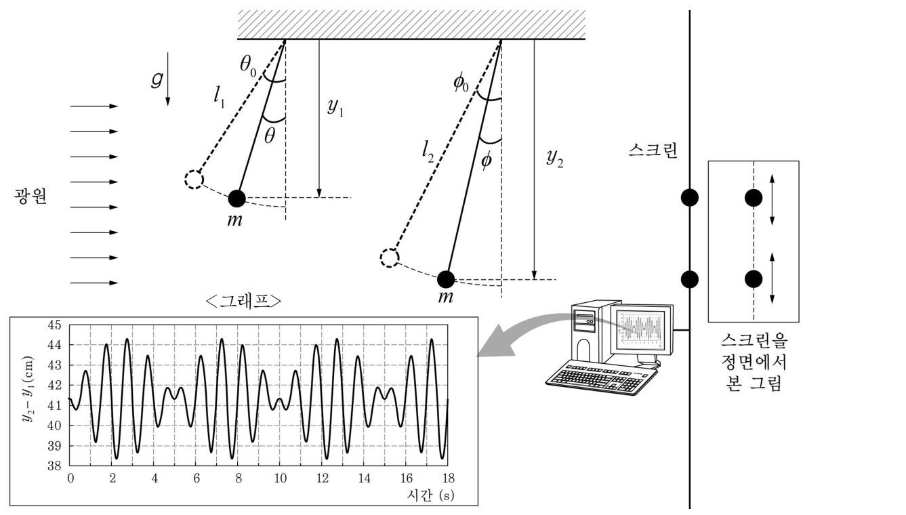

두 진자 그림자의 위치 차 — 라그랑지안·맥놀이 해석과 ‘주기·중첩’ 사고 활동 수업 계획Shadows of two pendulums · Lagrangian, beats in y₂ − y₁, reading f₁, f₂ from an MBL graph · lesson plan with thinking skills
철수는 그림과 같이 길이가 \(l_1\), \(l_2\)인 줄에 질량 \(m\)인 쇠구슬을 달아 진자 실험을 하였다. 왼쪽에서 평행광선을 비추었더니 스크린에 비친 두 쇠구슬의 그림자가 동일한 수직선상에서 각각 위아래로 진동하였다. 두 쇠구슬의 그림자 위치 \(y_1\)과 \(y_2\)를 MBL (Micro-computer Based Laboratory)장치와 센서로 측정하여 시간에 대한 두 그림자 위치의 차이(\(y_2-y_1\)) 그래프를 얻었다.
철수는 <그래프>에서 파형이 주기적으로 나타나는 것을 관찰하고, 이러한 특성을 다음과 같은 과정으로 알아보았다. 【30점】
① 라그랑지안 방정식을 이용하여 두 진자의 운동을 분석한다. 줄의 질량과 공기저항을 무시할 때, 라그랑지안은 \(L=T-V=\)____㉠____이다. 라그랑지안 방정식을 적용하면 두 진자의 각도에 대한 방정식이 아래와 같다.
\[ \ddot\theta+\frac{g}{l_1}\sin\theta=0,\qquad\ddot\phi+\frac{g}{l_2}\sin\phi=0 \]초기값 \(\theta_0\)와 \(\phi_0\)가 작으면, \(\theta=\theta_0\cos\omega_1t\), \(\phi=\phi_0\cos\omega_2t\)이다.
② 두 쇠구슬의 그림자 위치의 차이(\(y_2-y_1\))를 구한다. 천장을 기준으로 하고, 아랫방향을 양(+)의 방향으로 하면, \(y_1=l_1\cos\theta\), \(y_2=l_2\cos\phi\)이므로
\[ \begin{aligned} y_2-y_1&=l_2\cos\phi-l_1\cos\theta\\&\approx l_2\left(1-\tfrac12\phi^2\right)-l_1\left(1-\tfrac12\theta^2\right)\\ &=(l_2-l_1)+\tfrac12(l_1\theta^2-l_2\phi^2)\\&=(l_2-l_1)+\tfrac12(l_1\theta_0^2\cos^2\omega_1t-l_2\phi_0^2\cos^2\omega_2t) \end{aligned} \](\(\theta_0\)가 작으므로, \(\cos\theta\approx1-\tfrac12\theta^2\)으로 근사하였다.)
파형을 보면 ____㉡____ 이므로, \(A=\tfrac12l_1\theta_0^2=\tfrac12l_2\phi_0^2\)으로 두면,
\[ \begin{aligned} y_2-y_1&=(l_2-l_1)+A(\cos^2\omega_1t-\cos^2\omega_2t)\\&=(l_2-l_1)+\frac A2(\cos2\omega_1t-\cos2\omega_2t)\\&=(l_2-l_1)-A\sin(\omega_1+\omega_2)t\,\sin(\omega_1-\omega_2)t\\&=(l_2-l_1)-A\sin2\pi(f_1+f_2)t\,\sin2\pi(f_1-f_2)t \end{aligned} \]③ 수학적으로 유도한 결과와 그래프 파형을 비교하여, 두 진자의 진동수를 각각 구한다. \(f_1=\)____㉢____, \(f_2=\)____㉣____

4-1
위 과정에서 ㉠~㉣의 빈 칸에 들어갈 내용을 쓰고, 만일 위 실험에서 평행광선을 위에서 아래로 비추어 바닥에 비친 두 진자의 그림자 위치 차이를 측정한다면 결과가 어떻게 달라질지 정성적으로 설명하시오. [20점]
㉠ 두 진자의 라그랑지안 \(L=T-V\)를 쓰시오.
㉡ 파형의 어떤 특징 때문에 \(A=\tfrac12l_1\theta_0^2=\tfrac12l_2\phi_0^2\)으로 둘 수 있는가?
㉢, ㉣ 그래프에서 두 진자의 진동수 \(f_1\), \(f_2\)를 구하시오.
평행광선을 위에서 아래로 비추어 바닥에 비친 두 진자의 그림자 위치 차이를 측정한다면 결과가 어떻게 달라지는지 정성적으로 설명하시오.
구한 진동수와 그래프(진폭 약 3 cm)로 두 진자의 길이와 처음 각을 추정하시오. (\(g=9.8\ \mathrm{m/s^2}\))
4-2
김 교사는 고등학교 교육과정의 물리 내용에 나오는 ‘주기와 진동수’, ‘파동의 중첩 원리’ 개념을 다음에 제시한 <사고 활동>을 활용하여 고등학생을 지도하는 데 적절한 수업을 계획하고 있다. 김 교사가 계획 중인 아래의 <수업 활동 계획>에서 ‘상관관계 찾기’ 이외의 내용을 완성하시오. (단, 수업 내용을 이미 제시한 ‘상관관계 찾기’의 경우와 같이 <사고 활동>에 알맞은 주요 내용이 분명하게 나타나도록 간략하게 제시하시오.) [10점]
| 사고 활동 | 설명 |
|---|---|
| 상관관계 찾기 | 두 사물이나 두 사건 간에 있을 수 있는 상관관계를 찾기 |
| 변인 통제하기 | 독립 변인이 두 개 이상일 때, 하나의 변인만을 변화시키고 나머지 변인들을 일정하게 유지하기 |
| 보존되는 것 찾기 | 겉보기에 다른 여러 사물이나 사건 속에서 일정한 값을 발견하기 |
| 예측하기 | 주어진 법칙과 조건에 따라 어떤 현상이 일어날 지 연역 논리적으로 예측하기 |
| 물리 개념 | 사고 활동 | 수업 내용 |
|---|---|---|
| 주기와 진동수 | 상관관계 찾기 | 1개의 진자에 대해 길이를 달리해서 주기의 변화를 측정한다. 측정한 결과로부터 진자의 길이와 주기의 상관관계를 도출한다. |
| 변인통제하기 | (작성) | |
| 파동의 중첩 원리 | 보존되는 것 찾기 | (작성) |
| 예측하기 | (작성) |
<수업 활동 계획>의 ‘변인통제하기’, ‘보존되는 것 찾기’, ‘예측하기’ 칸의 수업 내용을 완성하시오.
정답모범 답안 요약
| 문항 | 모범 답안 (요약) | 검증 |
|---|---|---|
| 4-1 ㉠ | \(L=\tfrac12ml_1^2\dot\theta^2+\tfrac12ml_2^2\dot\phi^2+mgl_1\cos\theta+mgl_2\cos\phi\) | 라그랑주 방정식 → 주어진 식 재현 |
| 4-1 ㉡ | 파형의 진폭(포락선)이 주기적으로 0이 되는(맥놀이 마디에서 진동이 완전히 사라지는) 모양이므로, 두 항의 진폭이 같다. | 모의실험: A 슬라이더 — 같은 진폭 조건에서 마디의 진폭이 0 |
| 4-1 ㉢㉣ | \(f_1=0.55\) Hz, \(f_2=0.45\) Hz | 모의실험 RK4(비선형 진자): 측정 f₁ + f₂ ≈ 1 Hz, 마디 간격 ≈ 5 s |
| 4-1 위에서 비출 때 | 바닥의 그림자 위치 차는 x₂ − x₁ ≈ D + l₂φ₀cos ω₂t − l₁θ₀cos ω₁t: ① 진폭이 훨씬 크고(1차), ② 각 그림자가 진자의 진동수 f로 진동(빠른 진동 ≈ 0.5 Hz), ③ 맥놀이 최소 간격이 10 s로 두 배, ④ 두 진폭이 달라 최소에서도 0이 되지 않으며, ⑤ 기준선이 매단 점 사이 거리 D가 된다. | 모의실험 ‘위에서 아래로’ 모드의 RK4 그래프 |
| 확장 1 확장 | l₁ ≈ 0.82 m, l₂ ≈ 1.23 m, θ₀ ≈ 0.27 rad, φ₀ ≈ 0.22 rad | 모의실험 readout |
| 4-2 | 변인통제하기: 길이·진폭은 일정, 추의 질량만 바꾸어 주기 측정(주기는 질량과 무관). 보존되는 것 찾기: 두 펄스가 겹쳤다 지나간 뒤 각 펄스의 모양·진폭·속력이 보존됨을 관찰(독립성). 예측하기: 중첩 원리로 두 펄스가 만날 때의 합성 파형(또는 두 소리굽쇠의 맥놀이 진동수 |f₁ − f₂|)을 미리 예측하고 실험으로 확인. | 사고 활동 정의에 따른 계획 — 공식 정답 미공개 |
1소문항별 풀이 (AI 모범 답안)
4-1 ㉠4-1 3점
㉠ 두 진자의 라그랑지안 \(L=T-V\)를 쓰시오.
1T와 V
\(T=\tfrac12m(l_1\dot\theta)^2+\tfrac12m(l_2\dot\phi)^2\), 천장을 기준(0)으로 아래가 음의 높이: \(V=-mgl_1\cos\theta-mgl_2\cos\phi\).
오일러–라그랑주: \(ml_1^2\ddot\theta+mgl_1\sin\theta=0\) → \(\ddot\theta+\dfrac g{l_1}\sin\theta=0\) ✓.
V의 부호(천장 기준)를 틀리면 운동 방정식의 부호가 바뀐다.
4-1 ㉡4-1 3점
㉡ 파형의 어떤 특징 때문에 \(A=\tfrac12l_1\theta_0^2=\tfrac12l_2\phi_0^2\)으로 둘 수 있는가?
1판단
\(\tfrac12(l_1\theta_0^2\cos^2\omega_1t-l_2\phi_0^2\cos^2\omega_2t)\)에서 두 진폭이 다르면 맥놀이 마디에서도 진동이 남는다. 그래프는 약 5, 10, 15 s에서 진동이 거의 사라지는(완전 맥놀이) 모양 → 두 진폭이 같다: \(\tfrac12l_1\theta_0^2=\tfrac12l_2\phi_0^2=A\).
4-1 ㉢㉣4-1 6점
㉢, ㉣ 그래프에서 두 진자의 진동수 \(f_1\), \(f_2\)를 구하시오.
1그래프 읽기
봉우리 간격 ≈ 1 s(예: 1.75, 2.7, 3.7 s …) → \(f_1+f_2=1\) Hz. 진동이 사라지는 시각 ≈ 0, 5, 10, 15 s → \(\dfrac{1}{2(f_1-f_2)}=5\) s → \(f_1-f_2=0.1\) Hz.
2결과
\(f_1=0.55\) Hz, \(f_2=0.45\) Hz (\(l_1\lt l_2\) → \(f_1\gt f_2\)). 확인: \(l=g/(2\pi f)^2\) → \(l_1\approx0.82\) m, \(l_2\approx1.23\) m, \(l_2-l_1\approx41\) cm (그래프의 기준선 ≈ 41 cm).
마디 간격 5 s를 맥놀이 주기 1/Δf로 보아 Δf = 0.2 Hz(f = 0.6, 0.4 Hz)로 답하는 실수 — |sin|의 0점 간격은 1/(2Δf).
4-1 위에서 비출 때4-1 8점
평행광선을 위에서 아래로 비추어 바닥에 비친 두 진자의 그림자 위치 차이를 측정한다면 결과가 어떻게 달라지는지 정성적으로 설명하시오.
1식
\(x_2-x_1=D+l_2\sin\phi-l_1\sin\theta\approx D+l_2\phi_0\cos\omega_2t-l_1\theta_0\cos\omega_1t\) (D = 두 매단 점의 수평 거리).
2달라지는 점
- 진폭: 각도의 1차 항이라 수십 cm로 매우 크다(옆 빛은 2차 항, 약 3 cm).
- 진동수: 그림자는 진자의 진동수 f₁, f₂ 그대로 진동(옆 빛에서는 2f). 빠른 진동은 평균 진동수 \((f_1+f_2)/2=0.5\) Hz(주기 약 2 s).
- 맥놀이: 포락선 \(|\cos\pi(f_1-f_2)t|\)류 → 진폭이 최소가 되는 간격이 10 s로 길어진다(옆 빛 5 s).
- 완전 상쇄 안 됨: \(l_1\theta_0^2=l_2\phi_0^2\)이면 \(l_1\theta_0/l_2\phi_0=\sqrt{l_1/l_2}\neq1\) → 마디에서도 진폭이 0이 되지 않는다.
- 기준선: \(l_2-l_1\)이 아니라 두 매단 점 사이 거리 D. 또 t = 0에서 두 진자가 같은 쪽에서 출발하면 처음에 차이가 작고(위상 같음) 5 s 무렵 가장 커진다.
‘빛의 방향과 무관하게 같은 그래프’라고 하거나, 진동수가 그대로 2f라고 쓰는 실수.
확장 14-1
구한 진동수와 그래프(진폭 약 3 cm)로 두 진자의 길이와 처음 각을 추정하시오. (\(g=9.8\ \mathrm{m/s^2}\))
1계산
\(l_1=\dfrac{9.8}{(2\pi\cdot0.55)^2}=0.821\) m, \(l_2=\dfrac{9.8}{(2\pi\cdot0.45)^2}=1.226\) m. \(\theta_0=\sqrt{2A/l_1}=\sqrt{0.06/0.821}=0.27\) rad, \(\phi_0=0.22\) rad — ‘작은 각’ 근사의 경계(주기 오차 약 0.5 %).
4-24-2 10점
<수업 활동 계획>의 ‘변인통제하기’, ‘보존되는 것 찾기’, ‘예측하기’ 칸의 수업 내용을 완성하시오.
1작성 예
| 사고 활동 | 수업 내용(예) |
|---|---|
| 변인통제하기 | 진자의 길이와 진폭(작은 각)을 일정하게 유지하고 추의 질량만 바꾸어 주기를 측정한다(또는 길이·질량을 일정하게 하고 진폭만 바꾼다). 주기가 질량(과 작은 진폭)에 무관하고 길이에만 관계됨을 확인한다. |
| 보존되는 것 찾기 | 긴 용수철(슬링키)의 양 끝에서 두 펄스를 마주 보내 겹쳤다가 지나가게 한다. 겹치는 동안 모양은 달라 보이지만 지나간 뒤 각 펄스의 모양·진폭·속력(진동수)이 그대로 보존됨을 찾는다(파동의 독립성). 또는 겹칠 때 변위의 합이 일정한 규칙(대수합)을 따름을 발견. |
| 예측하기 | 중첩 원리(합성 변위 = 각 변위의 합)를 이용해, 같은 쪽/반대쪽 변위의 두 펄스가 만나는 순간의 모양(보강·상쇄)을 미리 작도하여 예측한 뒤 관찰로 확인한다. 또는 진동수 440 Hz, 444 Hz 소리굽쇠를 함께 울릴 때 맥놀이 진동수(4 Hz)를 예측하고 MBL로 확인한다. |
‘변인통제하기’에 길이와 질량을 동시에 바꾸거나, ‘예측하기’를 실험 후 결과 정리로 쓰는 경우(예측은 실험 전 연역).
2채점 기준 (예시)
공식 채점 기준은 공개되지 않는다. 배점과 답안 요소를 바탕으로 만든 예시 채점 기준이다.
| 문항 | 배점 | 채점 요소 (예시 답안의 핵심 표현) |
|---|---|---|
| 4-1 ㉠ | 1 | 운동 에너지 두 항 |
| 4-1 ㉠ | 1 | 퍼텐셜 에너지(부호 포함) 두 항 |
| 4-1 ㉠ | 1 | 주어진 운동 방정식과 일관 |
| 4-1 ㉡ | 2 | 포락선이 0이 되는(완전 맥놀이) 특징 지적 |
| 4-1 ㉡ | 1 | → 두 진폭이 같음 |
| 4-1 ㉢㉣ | 2 | f₁ + f₂ = 1 Hz (빠른 진동) |
| 4-1 ㉢㉣ | 2 | |f₁ − f₂| = 0.1 Hz (마디 간격 5 s = 1/2Δf) |
| 4-1 ㉢㉣ | 2 | f₁ = 0.55, f₂ = 0.45 Hz (l₁ < l₂ 고려) |
| 4-1 위에서 비출 때 | 2 | 그림자가 수평 위치 l sinθ(1차 항)임을 지적 — 진폭 증가 |
| 4-1 위에서 비출 때 | 2 | 진동수가 2f → f (빠른 진동 주기 약 2 s) |
| 4-1 위에서 비출 때 | 2 | 맥놀이 간격 변화(10 s) |
| 4-1 위에서 비출 때 | 2 | 두 진폭이 달라 완전 상쇄 안 됨·기준선 D 등 |
| 4-2 | 4 | 변인통제: 하나의 변인만 바꾸고 나머지 고정이 분명 |
| 4-2 | 3 | 보존되는 것 찾기: 중첩 후 보존되는 양(모양·진폭·속력 등)이 분명 |
| 4-2 | 3 | 예측하기: 중첩 원리로 결과를 연역적으로 예측하고 확인 |
| 합계 30점 | ||
3출제 의도·검토
출제 의도
- 라그랑지안으로 단진자 방정식을 세우고, 소각 근사·삼각함수 합성으로 ‘그림자 위치 차’가 맥놀이 꼴임을 보이는 능력, MBL 그래프에서 진동수를 읽어 내는 능력.
- 측정 방법(빛의 방향)이 바뀌면 같은 운동이 다른 신호로 나타남을 정성적으로 추론하는 능력, 사고 활동을 반영한 수업 설계 능력.
43D 모의실험 — 두 진자의 그림자 위치 차와 맥놀이 (Space 재생/정지 · R 처음으로 · F 전체화면)
5고등학생 지도 — 고교 교육과정과 잇기
고교 교육과정과의 연결
- 물리학Ⅱ(2015) 단진자의 주기 \(T=2\pi\sqrt{l/g}\) — 길이·질량·진폭 변인 통제 실험
- 물리학Ⅰ 파동의 중첩·맥놀이(소리굽쇠), MBL을 이용한 진동 측정
고등학생용 변형 문항
- 길이 0.82 m, 1.23 m인 두 진자를 동시에 놓으면 몇 초마다 다시 같은 위상이 되는가? (1/(f₁ − f₂) = 10 s)
- 그림자가 진자의 진동수의 2배로 움직이는 이유를 설명하라.
6수업 활용 안내
수업 흐름 (50분)
- 도입 (5분) — 두 진자 그림자 시연·MBL 그래프 보여 주기
- 모형 (12분) — 라그랑지안 → 단진자 방정식, 소각 근사
- 그래프 해석 (12분) — 맥놀이 꼴 유도, f₁ + f₂·f₁ − f₂ 읽기
- 빛의 방향 바꾸기 (8분) — 모의실험 ‘위에서 아래로’ 비교
- 수업 설계 (13분) — 사고 활동별 수업 내용 작성·발표
자주 나오는 오개념
- “그림자도 진자와 같은 진동수로 움직인다(옆 빛)”
- “맥놀이 마디 간격 = 1/Δf”
- “진자의 주기는 질량에 따라 달라진다”
- “중첩이 끝나면 파동이 서로 영향을 받아 바뀐다”
평가 포인트
- 라그랑지안과 운동 방정식을 일관되게 쓰는가
- 그래프에서 f₁ + f₂, f₁ − f₂를 정확히 읽는가
- 위에서 비출 때 진동수·진폭·맥놀이의 변화를 설명하는가
- 사고 활동의 정의에 맞는 수업 내용을 쓰는가
더 나아가기
스마트폰 가속도 센서나 영상 분석으로 두 진자의 그림자 위치를 직접 측정해 맥놀이 그래프를 얻고, 길이를 바꾸어 마디 간격을 예측·검증하는 탐구로 확장한다.